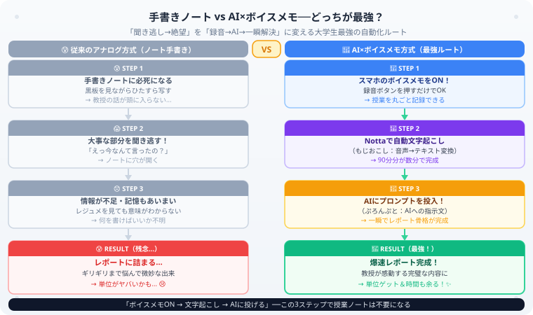

大学生活ハック | 公開：2026年6月30日
【大学生必見】ボイスメモ×AIで
レポート無双！単位修得ハックを完全公開
著者：大谷 一輝（関西の大学3回生・日商簿記1級勉強中）
大
著者・大谷からひとこと
こんにちは、大谷です！
大学のレポートって、毎週「また今週も書かないといけない……何を書けばいいんだ……」ってなりませんか？（笑）
正直に言います。僕もめちゃくちゃ悩んでいた時期があります。でも今はあるフォーメーションを使うことで、そのストレスがほぼゼロになりました。
その名も「ボイスメモ × AI賢者」フォーメーション。スマホのボイスメモとChatGPT/Claudeを組み合わせるだけで、毎回の講義レポートが5分のイージーモードに化けます。
実際にこの方法で全科目のレポートをひとつも落とさずに修得した僕が、その手順を完全公開します！
また、記事の末尾にある【いいねボタン】もポチッと押してもらえると、めちゃくちゃ励みになります！

▲ 左（アナログ）vs 右（AI×ボイスメモ）──同じ授業でも結果がまったく変わる
なぜ「ボイスメモ × AI」がここまで強いのか？
大学のレポートには、大きく分けて2つの難関があります。
- 「何を書けばいいか分からない」問題——講義が終わった瞬間に内容を7割忘れているので、レポートの骨格が作れない
- 「教授の言葉を盛り込め」という謎の要求問題——「授業で話した内容を自分の言葉で…」と言われるが、そもそもノートが追いつかない
この2つの難関を同時に解決するのが「ボイスメモで講義を丸ごと録音 → AIに要約とレポート作成を依頼」という戦術です。
大原則：人間が手書きで記録できる情報量には上限があります。でもボイスメモは「教授の話した言葉をすべて」記録します。このデータ量の差が、レポートの質に直結します。
1. まずボイスメモで講義を「丸ごと」録音する
STEP 1 / 録音
講義が始まったら、スマホのボイスメモアプリ（iPhoneなら標準搭載、Androidなら「ボイスレコーダー」）を起動して録音を開始するだけです。特別な機材は不要です。
席は前から2〜3列目を狙う
教授の声が明瞭に録れるほど、後のAI処理精度が上がります。マイクは教授に向けてスマホを机の上に置くだけで十分です。
スライドやレジュメはカメラで撮る
ボイスメモは「音声」しか記録しないので、板書やスライドのキーワードはカメラで撮影しておきます。後でAIに「このスライドの内容も踏まえて」と追加インプットできます。
録音は講義終了まで止めない
質疑応答タイムにこそ教授の「核心的なコメント」が飛び出すことが多いです。Q&Aも含めて全部録っておきましょう。
録音に関する注意：大学・教授によっては録音を禁止している場合があります。シラバスや授業冒頭のアナウンスを必ず確認し、禁止されている場合は録音せず、後述の「テキスト入力」で代用してください。
2. 音声をテキストに変換する
STEP 2 / 文字起こし
録音した音声ファイルをテキストに変換します。2026年現在、無料または低コストで使える選択肢がいくつかあります。
| ツール | 精度 | コスト | おすすめ度 |
|---|
| Notta（ノッタ） | ★★★★★ | 無料枠あり | 日本語精度が高く大学生に最人気 |
| Whisper（OpenAI） | ★★★★★ | 無料（API利用） | 精度最高、技術系の人向け |
| Google ドキュメント（音声入力） | ★★★☆☆ | 無料 | 手軽だが日本語精度はやや落ちる |
| iPhone「メモ」アプリ | ★★★☆☆ | 無料 | 音声入力をリアルタイム変換、手軽さは最高 |
大谷のおすすめ：まず「Notta」を試してください。無料プランでも月120分の文字起こしができ、大学の90分講義を1〜2回分は無料枠でカバーできます。Googleアカウントでサインインするだけなので、難しい設定も一切不要です。
3. AI賢者に「要約プロンプト」を投げる
STEP 3 / AI処理
文字起こしテキストができたら、いよいよAI（ChatGPT / Claude）に投げます。ここでのプロンプトの質が、レポートの出来を決める最大のポイントです。
基本プロンプト：まず「講義の骨格」を整理させる
以下は大学の講義の文字起こしテキストです。
「[科目名]」の講義として、以下を整理してください。
1. 今回の講義の主要テーマ（1〜3行）
2. 教授が特に強調していたポイント（箇条書き5〜7点）
3. 教授が使った独特のフレーズや具体例（そのままの言葉で抜き出して）
4. レポートに使えそうなキーワード・専門用語（一覧で）
---以下、文字起こしテキスト---
[ここに文字起こしテキストを貼り付け]
レポート生成プロンプト：実際に提出できる文章を作る
上記の整理をもとに、以下の条件でレポートを作成してください。
・テーマ：「[教授が指定したレポートテーマ]」
・文字数：[○○字程度]
・形式：序論・本論・結論の3部構成
・教授が講義中に話した具体的なフレーズや事例を必ず本文に盛り込む
・専門用語は正確に使用し、一般論ではなく「この講義の内容」に基づいて書く
・大学生の1人称視点（「私は」）で書く
プロンプトの黄金ルール：「一般的なレポートを書いて」ではなく「この講義の文字起こしをもとに書いて」と指定することで、AIが架空の内容を作らず（ハルシネーションを防ぎ）、実際の講義内容に忠実なレポートを生成します。この一言の差が品質に直結します。
📊 実証済み：このハックで毎講義レポートの難関科目を「全て」修得しました！
大谷の実績 ／ 全科目レポート修得済み
「本当にそんな方法で単位が取れるの？」と思うかもしれませんが、安心してください。
実は僕、この【ボイスメモ×AI】のフォーメーションを使い倒した結果、毎回のレポート提出が必須だったヘビーな講義を【全て、ひとつも落とさずに修得】することができました！
特に、以下のような条件の講義では、このハックが【ダントツで最強の無双武器】になります。
1
【毎回の講義でレポート提出が必須なもの】
毎週「何を書けばいいんだ…」と徹夜で悩む時間が、AIの整理によってわずか5分のイージーモードに化けます。ボイスメモを録っていれば「今週の講義で教授が強調していた点を3つ教えて」と一言投げるだけで、レポートの骨格が秒速で完成します。
2
【「教授が講義中に話した言葉も含めて記述せよ」という無理ゲー講義】
これが一番効果を発揮します！普通の学生はノートを取りきれずに絶望しますが、こちらはボイスメモで「教授の生の言葉」を100%キャッチしてAIに読み込ませています。
AIに対して「教授が喋った独特のフレーズや具体例を盛り込んで、レポートを作って」と命令すれば、教授が読んだ瞬間に「おお！こいつは僕の授業をめちゃくちゃ真面目に聞いてるな！」と感動して高評価（優・秀）をくれる、完璧なレポートが瞬時に完成します（笑）。
手書きノートで消耗する時代はもう終わり。テクノロジーを賢く使いこなして、最高にスマートな大学生活を送りましょう！
⚠ 注意点（私的利用の範囲内で賢く使う）
このハックを最大限に活用するために、以下の点を必ず守ってください。
- AIが生成した文章をそのまま提出しない：AIの出力は「下書き」として使い、自分の言葉で加筆・修正してから提出しましょう。大学のAI利用ポリシーを事前に確認することも大切です。
- 録音は必ず事前に教授の許可を確認：シラバスや初回授業での説明を確認し、録音禁止の場合はテキストメモや撮影で代替してください。
- プロンプトに個人情報を入れない：文字起こしに他の学生の発言が含まれる場合、そのまま外部AIサービスに送らず、個人情報を削除してから使いましょう。
- AIの出力を鵜呑みにしない：AIは事実誤認（ハルシネーション）をする場合があります。特に数値・固有名詞は必ず元の講義内容と照合してください。
まとめ：「ボイスメモ × AI」3ステップまとめ
ボイスメモで講義を録音——スマホの標準アプリで十分。前方の席で講義開始と同時にスタート。
Notta等で文字起こし——無料ツールで90分分の文字起こしを数分で完了。
AIに「骨格整理 → レポート生成」プロンプトを投げる——教授の言葉を盛り込む指示を入れるのが最大のコツ。
このフォーメーションを習慣化すれば、レポートのプレッシャーから解放されるだけでなく、講義内容の理解度も自然と上がります（AIが整理した内容を読み返す時間が学習になるため）。まずは今週の講義から試してみてください！
資格学習もAIで効率化しよう
レポートだけでなく、簿記・FP・基本情報技術者などの資格学習にも同じ「要約×AI」の戦略は使えます。スタディガイドで目標の資格記事を見つけよう。
全117記事スタディガイドへ →
⚔ 学習記録で大学生活も資格もレベルアップ
スタディクエストで毎日の学習時間を記録すると、資格・単位・キャリアすべての進捗が可視化されます。
無料で学習記録を始める →